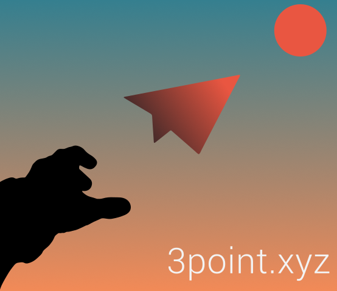

Author#

Vance Russell#
Vance Russell has nearly 40 years of experience working in forest science & management, rewilding, biodiversity conservation, agricultural landscapes, restoration, and natural resources management. He is a conservation consultant and works for various non-profit, state/federal agencies, and private businesses. Vance was the California Director of Programs for the National Forest Foundation, where he managed, led, and funded community forestry projects. Before joining the National Forest Foundation, he was director of Audubon California’s Landowner Stewardship Program, working with farmers and ranchers to restore habitat compatible with existing agricultural operations. He managed the 7,800-acre Bobcat Ranch and the 3,000-acre Mayacamas Mountains Reserve in California. Vance is a member of the Civic Consulting Collaborative, the former Board Chair of Groundswell International, a trustee for the South Downs National Park Trust, a Wild Farm Alliance co-founder and board member, and serves on the Rewilding Leadership Council for the Rewilding Institute. Vance received his M.S. in Forest Science and Natural Resources Management from Cornell University and a B.A. in Biology from the College of Wooster.
More information#
For more information, contact the author and see projects he is currently working on, visit Linkedin or the 3point.xyz website.
{kind=link}
Support#
This book is a free resource for anyone to use. If you want to support me or donate for the book, please go to my paypal site. I will be adding chapters and resources in the future. Thank you!